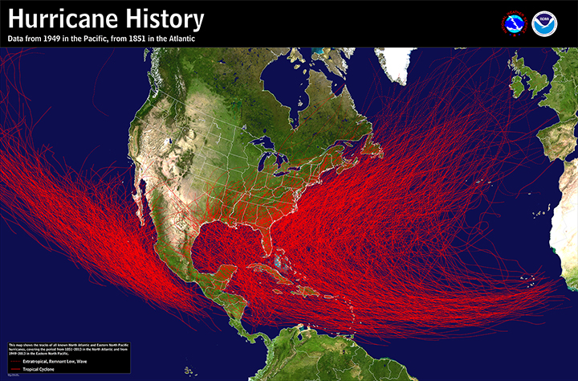
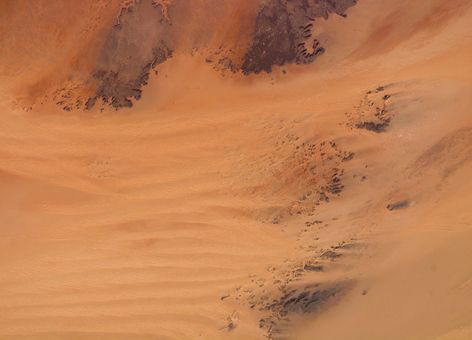

An official website of the United States government.
An official website of the United States government. What Does the Sahara Desert Have to Do with Hurricanes?
AUGUST 28, 2014 -- What does the Sahara Desert in Africa have to do with hurricanes in the Atlantic, Gulf of Mexico, and Eastern Pacific Ocean? You might think this sounds a little crazy because hurricanes are very wet and deserts are very dry, but if it weren't for this huge, hot, dry region in North Africa, we would see far fewer hurricanes in the United States. The Sahara Desert is massive, covering 10 percent of the continent of Africa. It would be the largest desert on Earth, but based strictly on rainfall amounts, the continent of Antarctica qualifies as a desert and is even larger. Still, rainfall in the Sahara is very infrequent; some areas may not get rain for years and the average total rainfall is less than three inches per year. While not the largest or driest of the deserts, the Sahara has a major influence on weather across the Western Hemisphere.
How a Tropical Storm Starts A-Brewin'
The role the Sahara Desert plays in hurricane development is related to the easterly winds (coming from the east) generated from the differences between the hot, dry desert in north Africa and the cooler, wetter, and forested coastal environment directly south and surrounding the Gulf of Guinea in west Africa. The result is a strong area of high altitude winds commonly called the African Easterly Jet. If these winds were constant, we would also experience fewer hurricanes. However, the African Easterly Jet is unstable, resulting in undulations in a north-south direction, often forming a corresponding north to south trough, or wave, that moves westward off the West African Coast. When these waves of air have enough moisture, lift, and instability, they readily form clusters of thunderstorms, sometimes becoming correlated with a center of air circulation. When this happens, a tropical cyclone may form as the areas of disturbed weather move westward across the Atlantic. Throughout most of the year, these waves typically form every two to three days in a region near Cape Verde (due west of Africa), but it is the summer to early fall when conditions can become favorable for tropical cyclone development. Not all hurricanes that form in the Atlantic originate near Cape Verde, but this has been the case for most of the major hurricanes that have impacted the continental United States.

(at least Category 1 on the Saffir-Simpson Hurricane Scale). Note how many originate at the edge of Africa's West Coast, where the desert meets the green forests to the south. (NOAA)
Wave of the Future (Weather)
In fact, just such a tropical wave formed off Cape Verde in mid-August of 1992. Up to that point, there had not been any significant tropical cyclone development in the Atlantic that year. However, the wave did intensify into a hurricane, and on August 24 Andrew came ashore in south Florida as a Category 5 hurricane, becoming one of the most costly and destructive natural disasters in U.S. history ... until Sandy. Hurricane Sandy, which eventually struck the U.S. east coast as a post-tropical cyclone, also began as a similar tropical wave that formed off the coast of west Africa in October of 2012. Some of these "waves" drift all the way to the Pacific Ocean by crossing Mexico and Central America. Many of the Eastern Pacific tropical cyclones originate, at least in part, from tropical waves coming off Cape Verde in Africa. Many of these waves traverse the entire Atlantic Ocean without generating storm development until after crossing Central America and entering the warm Eastern Pacific waters. Then, if the conditions are right, tropical cyclone formation is possible there. Hurricane Iselle, which hit the Big Island of Hawaii on August 8, 2014, was likely part of a wave that formed more than 8,000 miles away off of the West Coast of Africa and an example of the far-reaching influence the Sahara Desert has on our planet’s weather. While these waves with origins in the Sahara Desert might generate numerous thunderstorms and a pattern with the potential for developing into a tropical cyclone, often the conditions are not quite right. Hurricane Cristobal formed from a classic Cape Verde wave last week and currently is churning Atlantic waters, but is not expected to be a threat to the United States. The formation of these disturbances off the West Coast of Africa will remain a potential source of tropical storms through the end of Atlantic hurricane season in late November. Each wave is investigated by the NOAA National Hurricane Center and you can view these active disturbances on their website.
The Sahara Desert and You
When it comes to hurricanes and hurricane preparedness, it's interesting to know how a desert half a world away can influence the formation of severe weather on our coasts—and even parts of the Pacific Ocean. And no matter where you live, the old rule of planning for the worst and hoping for the best remains the surest way to stay safe. Learn more about how we at NOAA's National Ocean Service are staying prepared for hurricanes [PDF], and how you can create your own hurricane plan [PDF].
{kind=link}
